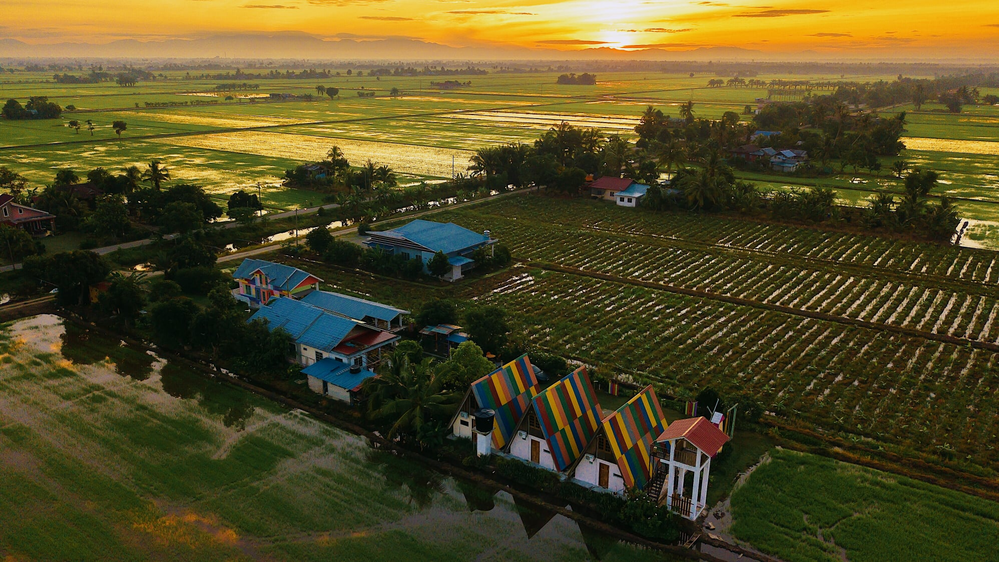
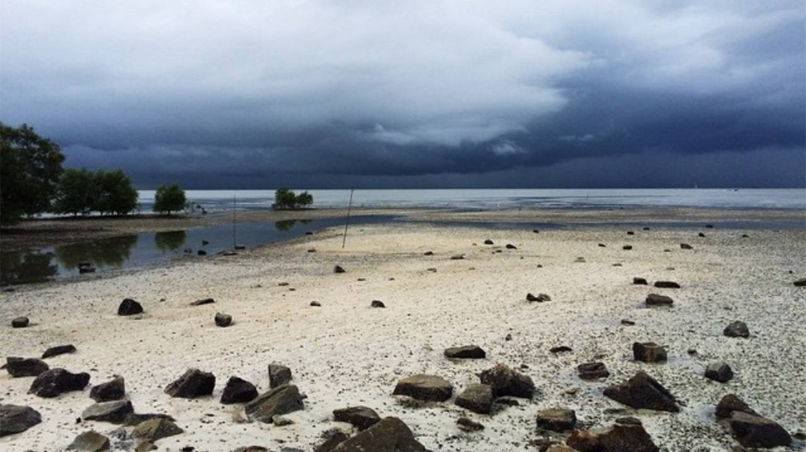

Discover the beautiful countryside, local attractions and interesting places around Sungai Besar, Selangor.

Sungai Besar is surrounded by beautiful paddy fields that reflect the agricultural lifestyle of the local community.
Visitors can enjoy peaceful countryside views and learn about the importance of rice farming in the region.
This local market offers visitors a chance to experience the daily life of the community.
Visitors can explore stalls selling fresh seafood, traditional kuih and other local products.

Located in the Sabak Bernam district, Pantai Bagan Nakhoda Omar is a coastal destination with relaxing seaside views.
The surrounding area is also associated with fishing activities and local seafood.
Observe the paddy fields from public roads and paths.
Discover traditional food and locally sold products.
Enjoy the seaside atmosphere and fishing village heritage.
Compare the attractions before planning your visit.
| Attraction | Category | Main Feature |
|---|---|---|
| Sungai Besar Paddy Fields | Nature | Rice fields |
| Pasar Petang Sungai Haji Dorani | Market | Local products |
| Pantai Bagan Nakhoda Omar | Recreation | Coastal scenery |
Discover additional attractions through the official tourism website.